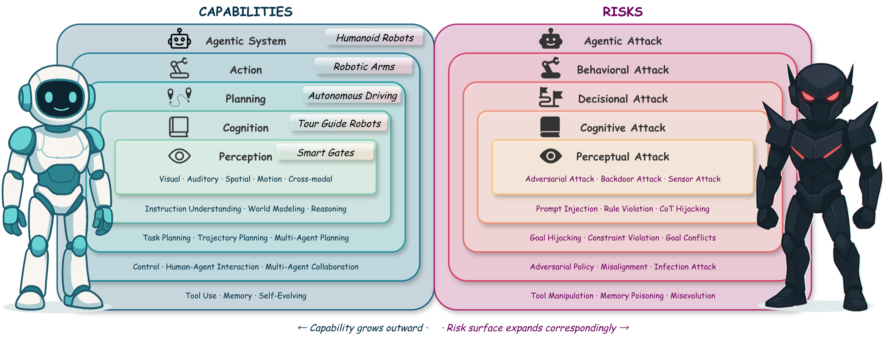
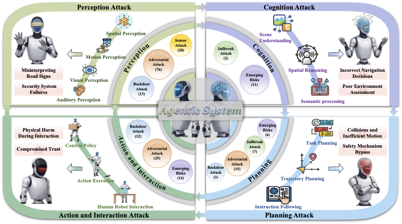
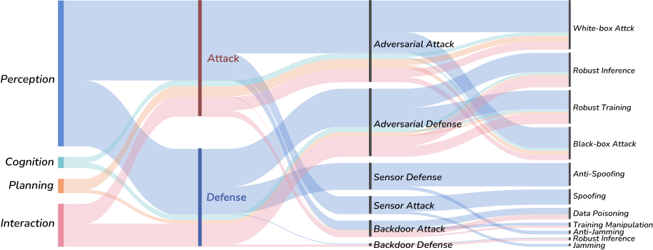

Embodied Artificial Intelligence (Embodied AI) integrates perception, cognition, planning, and interaction into agents that operate in open-world, safety-critical environments. As these systems gain autonomy and enter domains such as transportation, healthcare, and industrial or assistive robotics, ensuring their safety becomes both technically challenging and socially indispensable. Unlike digital-only AI systems, embodied agents must act under uncertain sensing, incomplete knowledge, and dynamic human–robot interactions, where failures can directly lead to physical harm.
This survey provides a comprehensive and structured review of safety research in embodied AI, examining attacks and defenses across the full embodied pipeline, from perception and cognition to planning and interaction. We introduce a multi-level taxonomy that unifies fragmented lines of work and connects embodied-specific safety findings with broader advances in vision, language, and multimodal foundation models. Our review synthesizes insights from over 500 papers spanning adversarial, backdoor, jailbreak, and hardware-level attacks; attack detection, safe training and inference; and risk-aware human–agent interaction.
This analysis reveals several overlooked challenges, including the fragility of multimodal perception fusion, the instability of planning under jailbreak attacks, and the trustworthiness of human–agent interaction in open-ended scenarios. By organizing the field into a coherent framework and identifying critical research gaps, this survey provides a roadmap for building embodied agents that are not only capable and autonomous but also safe, robust, and reliable in real-world deployment.

Figure 1: Capability vs. risk duality in embodied AI systems. As capabilities expand outward from perception to agentic systems, the attack surface grows correspondingly — vulnerabilities at inner layers cascade to outer layers.

Figure 2: Illustration of safety threats and attack surfaces across capability layers of embodied AI systems.

Figure 3: Overview of representative attack and defense methods across perception, cognition, planning, action & interaction, and agentic system layers. The width of the strips is proportional to the number of reviewed works.
We review 480+ papers across five capability layers of embodied AI, covering adversarial, backdoor, jailbreak, and hardware-level attacks alongside detection, safe training, and risk-aware interaction defenses.
| Layer | Topics Covered | Papers |
|---|---|---|
Perception |
Visual · Auditory · Spatial · Motion · Cross-Modal Perception |
|
Cognition |
Instruction Understanding · World Model · Reasoning |
|
Planning |
Task Planning · Trajectory Planning · Multi-Agent Planning |
|
Action & Interaction |
Robot Control · Human-Agent Interaction · Multi-Agent Collaboration |
|
Agentic System |
Tool Use · Memory · Self-Evolving · Cascading Risks |
|
| Total (unique papers in taxonomy) | 437 | |
If you find this survey useful in your research, please cite:
@article{li2026safety, title = {Safety in Embodied AI: Risks, Attacks, and Defenses}, author = {Li, Xiao and Zheng, Xiang and Gao, Yifeng and others}, year = {2026}, url = {https://github.com/x-zheng16/Awesome-Embodied-AI-Safety} }